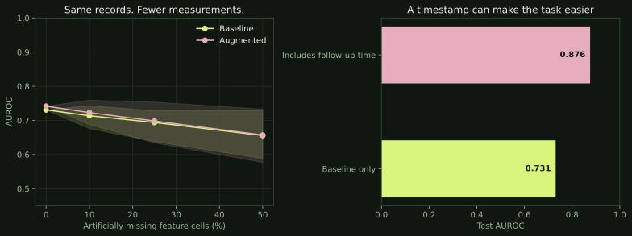

WORKING EXPERIMENT / REPRODUCIBLE BENCHMARK
A model meets missing information.
Feature-dropout stress tests and an information-leakage audit on heart-failure records
A baseline logistic model achieved test AUROC 0.731 on 90 held-out heart-failure records. Including follow-up duration raised it to 0.876—but that variable is unavailable at the proposed baseline prediction point. After excluding it, paired synthetic missingness tests compare clean training with a missingness-augmented recipe. The study illustrates two different threats: less information at use time, and inappropriate future information during evaluation.
1. Data and prediction point
The UCI cohort contains 299 heart-failure records and a binary death-event label, with differing follow-up durations. Eleven baseline predictors are retained after excluding both the target and follow-up time. This is a retrospective benchmark classification task. It is not survival analysis and cannot be interpreted as calibrated risk over a common clinical time horizon. Heterogeneous follow-up and censoring require more careful endpoint design for a prospective study.
2. The future-information trap
The data column time records follow-up duration. We exclude it from both usable models. A deliberately leaky comparator includes it solely to show the score difference: AUROC 0.876 versus 0.731 without it. The same train/test partition is used. This is not a better baseline clinical model. The resulting score reflects information that would not exist when a baseline prediction is requested, and may be entangled with event recording.

3. Two fixed training recipes
The stratified partition assigns 209 records to training and 90 to testing. Both recipes use median imputation, all-column missingness indicators, StandardScaler, and logistic regression C=1. Each transformation is fitted only on training data. The augmented recipe includes the original training matrix and three copies with independent 25% random cell dropout. Each copy has sample weight 0.25, preserving total training weight and logistic regularization strength. All-column indicators appear in both pipelines; clean-training indicators are constant. The comparison is a combined missingness-exposure and indicator-learning recipe, not a causal isolation of augmentation alone.
4. Controlled stress, not an external hospital
At 0%, 10%, 25%, and 50% missing-cell rates, we apply 30 seeded, paired masks to the same held-out records. The same mask goes to both models. The source data have no missing values; missingness is introduced artificially and independently of labels. Models are not retrained on test masks. We report mean AUROC and Brier score, with 5th–95th percentile ranges over corruption masks. These ranges measure corruption randomness, not population or training uncertainty. Real missingness can be informative, clustered by lab panel, or driven by treatment and workflow.
| Intact test model | AUROC | Brier | Sensitivity | False negatives |
|---|---|---|---|---|
| Training prevalence | 0.500 | 0.2184 | 0.00% | 29 |
| Clean baseline | 0.731 | 0.1933 | 41.38% | 17 |
| Augmented | 0.742 | 0.1881 | 37.93% | 18 |
| Follow-up time · unusable | 0.876 | 0.1283 | 65.52% | 10 |
5. Recorded outcomes
On intact test records, clean-training AUROC is 0.731 (95% test-row bootstrap interval 0.611–0.831), and augmented-training AUROC is 0.742. Their corresponding Brier scores are 0.1933 and 0.1881. At the default classification threshold, the clean model has sensitivity 41.38%. A ranking score alone therefore conceals substantial false-negative behavior. The full corruption table is downloadable. Small differences between recipes and overlapping mask ranges do not establish broad superiority.
6. What would make the next study stronger?
A next evaluation should define a prediction time and event horizon, model censoring appropriately, preserve temporal ordering, and test a separate cohort. Missingness scenarios should include withheld panels and clinically plausible observation mechanisms, not only independent cell dropout. The current experiment is useful as a reproducible failure probe. It provides no treatment recommendation, clinical deployment threshold, or assurance of generalization.
Reproducibility and provenance
Seed 20261113. Numerical outputs are stored in results.json, including split row indices, prediction-level records, dataset hashes, intervals, and environment versions. The source package includes the analysis protocol, fitting code, figure code, this report, and source attribution. Run the supplied commands to reproduce the analysis. Parameters were fixed before evaluation; an independent audit corrected augmentation weights and all-column indicators before interpreting results.